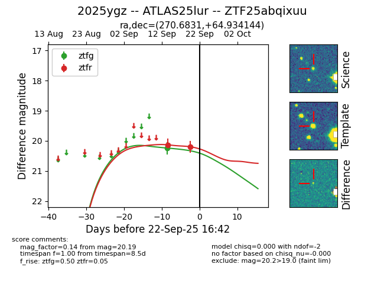
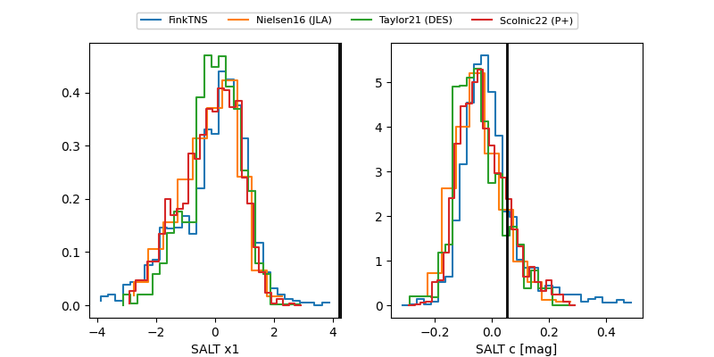

FINK: ZTF25abqixuu
Lasair: ZTF25abqixuu
ALeRCE: ZTF25abqixuu
TNS: 2025ygz
YSE: 2025ygz
ZTF25abqixuu (ztf,fink)
2025ygz (tns,yse)
ATLAS25lur (atlas)
equatorial (ra, dec) = (270.6831,+64.93414)
galactic (l, b) = (94.5166,+29.50954)


last ztfg=20.24, ztfr=20.19
1 ztfg, 2 ztfr detections